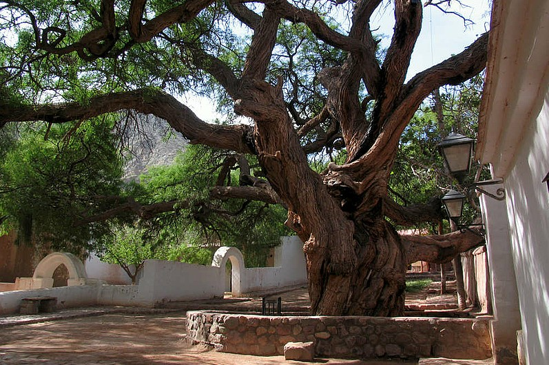

El pueblo de Purmamarca se encuentra a 2324 metros de altura.
Con una caminata se puede recorrer para descubrir sus calles y edificios antiguos. En la plaza principal funciona todos los días un colorida feria de artesanías que recibe a cientos de turistas. Enfrente se encuentra la Iglesia de Santa Rosa de Lima, construida en el año 1648 y declarada Monumento Histórico Nacional. En el templo se destaca la antigua campana, los anchos muros y la carpintería de madera de cardón.
Otro de los edificios históricos es el cabildo colonial donde en la actualidad funciona la Biblioteca Popular “Viltipico”. Este cabildo es el más pequeño de todo el país.
¿COMO LLEGAR?
El pequeño pueblo de Purmamarca se encuentra sobre la Ruta Nacional 52 que se dirige al Paso de Jama (Frontera Argentina-Chile), a 4 kilómetros de la Ruta Nacional 9. A Purmamarca llegan micros y colectivos de la capital provincial San Salvador de Jujuy y de otros pueblos de la Quebrada de Humahuaca. Distancias desde Purmamarca a: San Salvador de Jujuy 66 km, Tilcara 27 km, Humahuaca 69 km, La Quiaca 225 km. Coordenadas GPS: 23°44'00?S // 65°29'00?O
¿QUE HACER?
Cerro de los Siete Colores

Es la postal de Purmamarca. Probablemente el cerro más fotografiado de Argentina. Está conformado por sedimentos marinos, lacustres y fluviales que se fueron depositando en la zona durante millones de años atrás. Es recomendable su visita en horas de la mañana y hasta el mediodía.
Paseo de los Colorados

De aproximadamente 3 Km de largo, este circuito recorre parte del lecho del río Tumbaya (afluente del Purmamarca), a espaldas del Cerro de Siete Colores. De dificultad baja, y aproximadamente 1 hora de duración. Se puede realizar el circuito en cualquier momento del día pero se recomienda durante la tarde. Guías locales ofrecen caminatas nocturnas. especialmente atractivas en noches estrelladas. Recomendamos llevar agua, sombrero y anteojos de sol.
Algarrobo Historico
Sobre la calle Belgrano, a la izquierda de la iglesia, se encuentra uno de los símbolos históricos más importantes y más antiguos de la provincia, El Algarrobo Histórico. Se trata de un ejemplar de algarrobo negro cuyo diámetro de copa es de aproximadamente 30 m, con una altura máxima de 13 m. Su edad se calcula, de acuerdo a estudios realizados por el INTA, en 620 años. Según la leyenda, fue al pie de este algarrobo donde, en el año 1594, el cacique local Viltipoco, fue apresado por Francisco de Argañaraz y Murguía (Gobernador de Jujuy por entonces), al ser emboscado mientras dormía la siesta bajo su sombra.
Cuesta de Lipan

La Cuesta de Lipán es un sector de gran belleza de la Ruta Nacional 52 que se dirige en dirección del Paso de Jama en la frontera con Chile. El estado de la ruta es bueno y se encuentra asfaltada. Para acceder a la cuesta de Lipán se asciende a una altura de 4170 msnm., en el punto más alto hay un mirador para observar las impresionantes vistas. Al descender la cuesta se llega a las Salinas Grandes.
___________________________________________________________________
¿DONDE ALOJARSE?

Colores de Purmamarca
Colores de Purmamarca
Psj 7 Colores S/N , Alt, Av. San Martín al 600, Y4618 Purmamarca, Jujuy
Tel: 011 15-5598-6605
★ ★ ★ ★ ★
Reserva YA

Mai Jaii
Mai Jaii
RN52, km 2, Purmamarca, Jujuy
Tel: 0388 459-8726
★ ★ ★ ★ ★
Reserva YA

Tierra Virgen
___________________________________________________________________
¿DONDE COMER?

El Manantial del Silencio
Manantial del Silencio
Ruta Nacional N52 Km 3,5, Purmamarca, Jujuy
Tel: 0388 490-8177
★ ★ ★ ★
+Info

El Morado Café Bar
El Morado Café Bar
Calle Salta y Gorriti 4618 Purmamarca, Jujuy
Tel: 0388 15-518-6124
★ ★ ★ ★
+Info